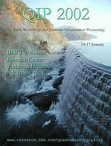

QIP 2002 -- The Fifth Workshop on Quantum Information Processing
IBM T.J. Watson Research Center, Yorktown Heights, New York
January 14-17, 2002
Quantum information processing is the intersection of quantum mechanics
and computer science. It tries to improve on classical computers and classical
complexity bounds by making use of quantum mechanical phenomena. After
Peter Shor's 1994 discovery of efficient quantum algorithms for factoring
and the discrete log (threatening current "classical" cryptography), the
field has grown explosively and is now one of the hottest subfields of
both computer science and physics.
QIP 2002 is the fifth workshop on quantum computing, quantum cryptography,
and quantum information theory in the tradition of AQIP
98 in Århus, AQIP 99
in Chicago, QIP
2000 in Montréal, and QIP
2001 at the CWI in Amsterdam. The conference will start
on the morning of Monday the 14th and will end sometime during the
afternoon of Thursday the 17th. It will consist of various invited talks
of 45 minutes each, a display of posters, and an open session. The slots
of the open session will be distributed during the conference itself. There
will not be published proceedings.
Program:
The program will appear here.
Registration:
Registration information click here.
Some travel support available for students:
Link to be supplied later
How to get there:
Instructions will be given for the Hampton Inn in Elmsford, New York, and
to the conference venue, IBM T.J. Watson Research Facility in Yorktown
Heights.
Invited speakers
-
*Richard Cleve, U Calgary
-
*Umesh Vazirani, Berkeley
-
Peter Shor, AT&T
-
*Howard Barnum, LANL
-
Petra Scudo, Technion
-
Reinhard Werner, Braunschweig
-
Alexander Holveo, Steklov Math Institute
-
Sandu Popescu, Bristol
-
John Watrous, U Calgary
-
*Manny Knill, LANL
-
Chris King, Northeastern
-
Andris Ambainis, Berkeley
-
Alexei Kitaev, Landau Inst.
-
Mike Nielsen, U Queensland
-
Dorit Aharonov, Hebrew U.
-
Hans Briegel, Munich
-
Eric Rains, AT&T
-
Dan Gottesman, Berkeley
-
Harry Buhrman, CWI
* unconfirmed
Organization:
Conference Poster ( Medium Large
)

QIP 2003: 13-17 Dec 2002 [sic]
Mathematical Sciences Research Institute, University of California, Berkeley
(http://www.msri.org).
Last update of this page: July 23, 2001.
Questions? Send e-mail to c1sec16@us.ibm.com
Telephone at (914) 945-3669